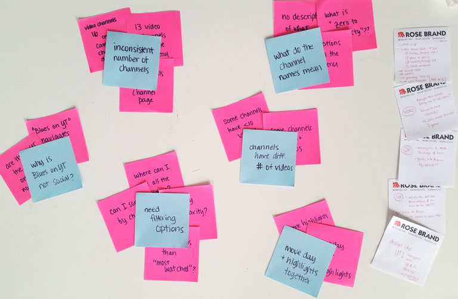
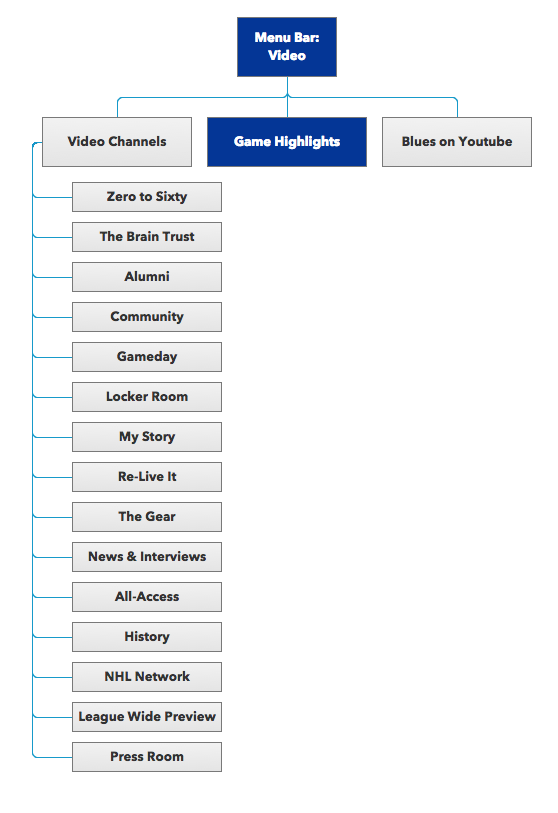
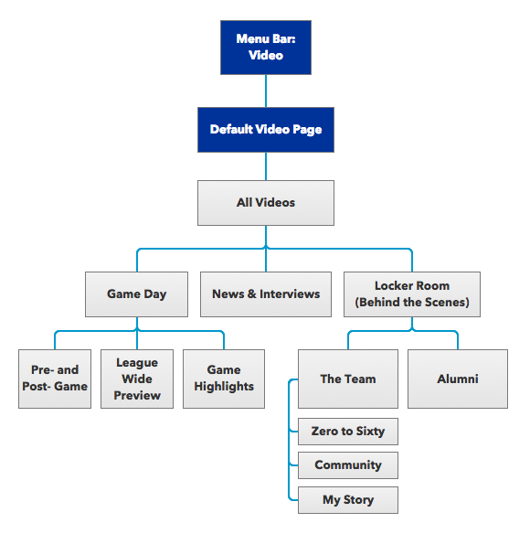

National Hockey League, St. Louis Blues Website: Case Study
Navigating through the St. Louis Blues video page is full of inconsistent menus, overwhelming channel options, and hard-to-find videos. Here, the menu structure of the video page was analyzed and re-ordered to facilitate easier viewing for the casual Blues fan.
The Challenge
Improve the information architecture and website hierarchy of the video center of the National Hockey League (NHL) St. Louis Blues website.
The Process
The above teardown was compiled from observations made from
usability studies of fans who were already familiar with the set-up of the NHL website. Using the notes gathered from the usability studies, the following insights were drawn out regarding the website menu architecture:
- Blues on YouTube is a main category, but navigates off-site.
- There are too many channels, and what type of videos the channels contain is unclear from the name. With 16 channels with undecipherable names means it's hard to figure out where to look for a video.
- Channel selection is inconsistent across pages. The number of video channels varies from 10 to 13 to 16 based on what page one is viewing.
- Number of videos varies drastically from one channel to another. Some channels contain less than 10 videos, while others contain more than 500.
- There is no page where one can view all the videos at the same time or filter through the videos.
- "Game Highlights" is a video channel, a main category, and the default video re-direct. Separation of "Game Highlights" from other game day videos provides users with a less comprehensive view of the game day.

Gathering Usability Notes
The Execution
After careful restructuring, the video center of the NHL St. Louis Blues was re-organized to maintain 3 main categories with 8 additional sub-categories.
Design Rationale
- Blues on YouTube: Blues on YouTube was moved into the Social Media navigation tab, as it links off-site.
- Channels and Names of Channels: Channels are re-organized into new category set-up.
- Channel Selection: Number of channels will be consistent to the 3 main categories and 8 additional sub-categories across pages.
- Number of Videos: Channels were absorbed in others if they had less than 10 videos available.
• News & Interviews absorbs The Brain Trust, Re-Live It, Press Room, and NHL Network.
• Locker Room absorbs The Gear, All-Acsess, and History. Locker Room breaks up into The Team (current Blues members) and Alumni (past Blues members).
• The Team further breaks into Zero to Sixty (features sponsored by the Bommarito Auto Group), Community, and My Story.
- Lack of All Videos Page: A default video page and an "All Videos" page are added in.
- "Game Day" absorbs Game Highlights, Gameday, and League Wide Preview. Game Day is a collection of all videos related to each and every game.
• Gameday is renamed "Pre- and Post- Game".
• League Wide Preview is added to provide more context for Blues games against the entire league.

Current Menu Structure

Proposed Menu Structure
Default Video Page
The default video page is the page that opens when one clicks on the Video main menu button.
Here, the default video page plays the most recently added video to the site, and displays playlists for the recently added videos and the subcategory channels.
The design mimics the layout of YouTube, a layout familiar to most users when viewing video.
All Videos Page
The "All Videos" page lists all the videos available. The videos can be sorted by date added or by number of views. Also, the videos can be searched or filtered by channel.